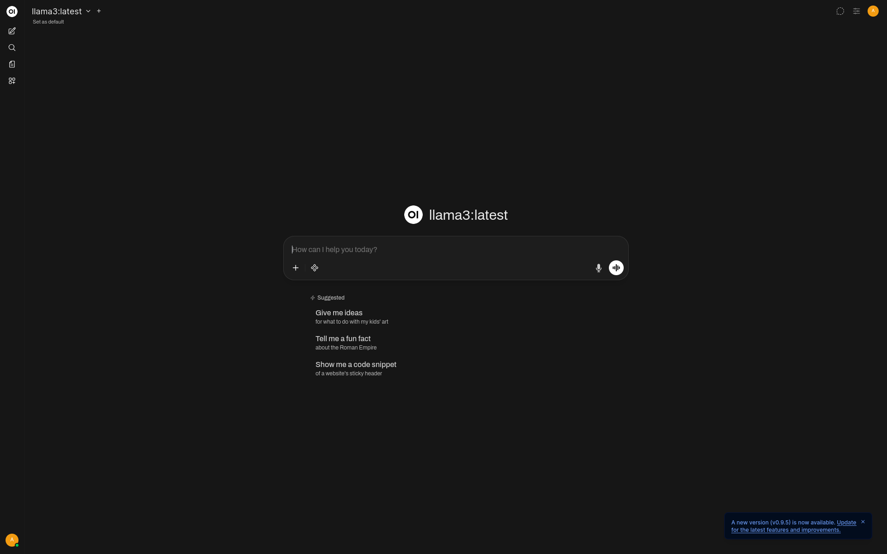

Open-WebUI: A Browser-Based Interface for Remote Access A web-based interface built using Apache Guacamole, providing browser-based remote access to my virtual machines. I configured the server, connected it to my Proxmox lab, and tested remote sessions through the web interface. This project allowed me to gain hands-on experience with: Setting up and configuring a remote desktop service Managing lab systems conveniently through a web interface Understanding the benefits of remote access for easy collaboration and management